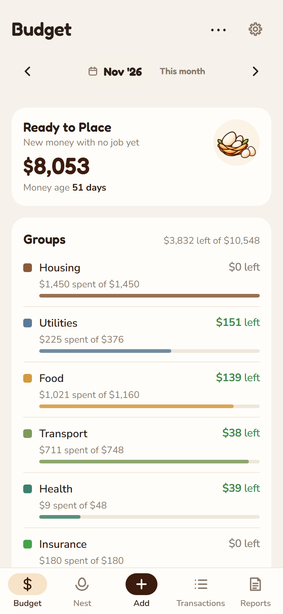
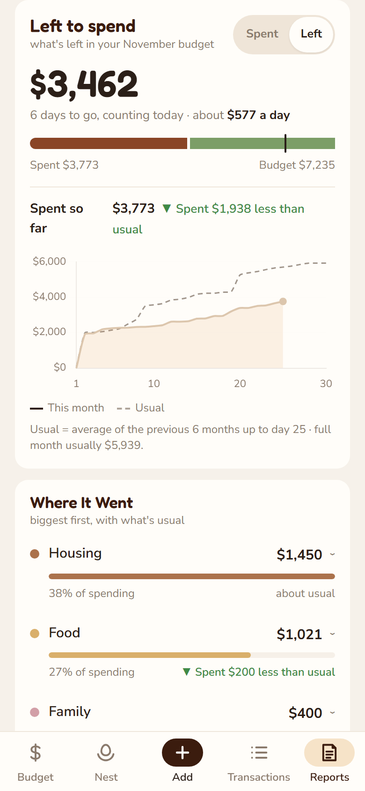
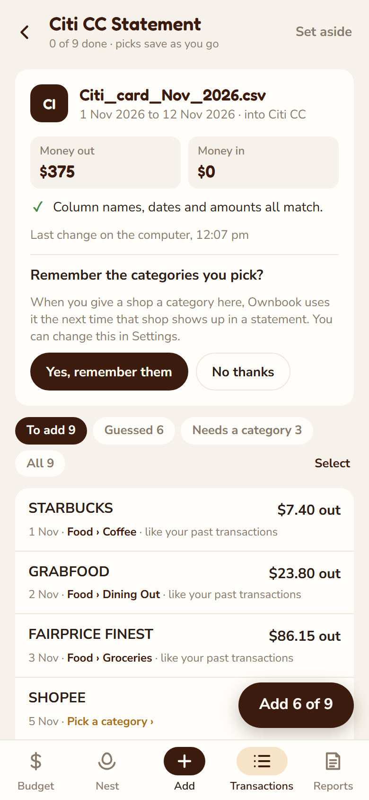

Using Ownbook on your phone
The Android app is a companion to the desktop app: it opens the same data folder, so your budget is the same wherever you look. The phone is for a quick look and quick entries; setting things up and digging deep happen on the computer.
Before you start
- Set up the desktop app first, with its data folder in a cloud folder (Google Drive, Dropbox or OneDrive) under Settings › Data Folder.
- You'll need Android 7 or newer, and about 150 MB of free space.
1. Install the app
- Install Ownbook from Google Play. While it's in testing, the download page says how to join.
- Updates come through Google Play like any other app, and your data stays.
- Had the version shared directly as an
.apkfile? The Google Play one installs as a separate app. Open the old app once so its last changes reach your folder, install from Google Play and link the same folder (or bring in a backup), then uninstall the old one.
2. Start a new book, or use your computer's
The first screen offers three starts. You don't need a computer for the first.
- Start a new book: the book is kept on this phone. Pick the currency Your money is in, then answer What Do You Have Today? (the line at the top says which of the 3 steps you're on; the bottom bar comes back once this step is saved): each bank account you spend from with its balance today, and each card with what you owe on it. Ready to place adds up as you type: your bank money less what the cards owe, and never below $0. Then Where Do You Want to Start?: From Today, or With Past Statements Too to bring in a statement first. Budget opens with Your First Month, six steps that tick themselves as you go. Tapped this by mistake and already use Ownbook on a computer? While the new book is still empty, What Do You Have Today? offers Open your synced folder or bring in a backup instead.
- Bring in a Backup: a backup file saved from Ownbook on a computer (Settings › Backups › Save a backup file). Put it on the phone, tap Bring in a Backup, choose the file and tap Bring it in. The book is then kept on this phone, like a new one.
- Use a Synced Folder: you already keep your book on a computer in Google Drive, Dropbox or OneDrive. Follow steps 3 and 4 below.
A book started on the phone says Kept on this phone under Settings › Sync. To keep a copy somewhere safe, which also lets a computer open it, tap Keep a copy in a folder and pick an empty folder that syncs with Google Drive, Dropbox or OneDrive. The phone's book is saved there, and from then on it syncs like any other. A folder that already holds a book is never written over.
Started a new book by mistake, when your book is already in a synced folder? Tap Open my book from a folder and pick that folder. If the phone's own book has anything in it, the phone asks first: Open that book saves a backup of the phone's book in that folder's _backups, then opens your book; Keep this phone's book changes nothing.
3. Get your data folder onto the phone
Only if you chose Use a Synced Folder. The app opens a real folder on the phone. Most cloud apps (Google Drive in particular) don't offer their folders to other apps, so a small sync app keeps a phone folder in step with the cloud:
- Install a two-way sync app such as Autosync for Google Drive or FolderSync.
- Sign in with the same cloud account your computer uses.
- Create one two-way folder pair: the cloud side is your data folder; the phone side is a new folder, for example
Documents/Ownbook Data. - Turn on syncing when files change, then run the first sync. Check the phone folder now contains a
datafolder withwarehouse.dbinside.
If your phone's folder picker does show your cloud folders with a working Use this folder button, you can pick the cloud folder directly and skip the sync app.
4. Link the app
- Open Ownbook and tap Use a Synced Folder.
- Choose the phone folder from step 3: the one that contains
dataandcategories, not thedatafolder itself. - Tap Use this folder, then Allow. The app copies your data in and opens on Budget.
- Check a few balances against the computer.
5. The five tabs

- Budget: Ready to place, with your money age under it, then your Groups in one card (with the month's total left beside the heading): each group with what's left and a line like $1,540 spent of $3,400 with a thin bar in the group's colour (it turns red when a group is over). Groups whose money goes to your own savings, investment, insurance or CPF accounts say $900 saved · $500 to go instead, because that money is still yours. Show empty categories sits under the card. To change the order, hold a group until the phone buzzes, then drag it; in a group's summary, hold a category to move it within the group. Looking back at what you placed against what you spent, month by month, is Placed vs Spent on the desktop. Tap a group for its summary and its categories, each with what it spent and what's left; tap a category there to change what's placed or move money. A pooled group's sheet also lists what was spent in each category. A category with a savings goal shows its stage (Warming · saving $1,350 of $3,000); its sheet has the goal, Place for this month and Change goal, and Set a savings goal on any category. Savings goals first lists every goal at the top of Budget; tap one to open it. Swipe the month bar left or right to change month, or tap the month to jump with the month and year wheels.
- Nest: your net worth and how it changed (under it, when the prices are from, and Refresh to fetch new ones), then a card for each reason it changed, in the same order (tap a reason under your net worth to jump to its card): Kept From What Came In: what came in less what went out, the same savings rate as Reports (How it's worked out under it shows the sum); Investments grew on their own, from what your broker accounts held at the start, plus what you put in, to today, with your biggest holdings, All holdings and how they did and Count my eggs; and CPF added on its own, split into your pay, interest, your home and the rest. Under Where It Sits, each group (Cash, Savings & Investments, What You Owe) is one line with its total, its change and how many accounts it has; tap a group to open it, and tap again to fold it. Anything that opens right there points down or says Show; places that take you to another page sit together at the end of a group or an account, each with a ›. Change these accounts in Settings at the end of a group goes to where accounts are set up. A credit card left owing after its bill says Carried since the month it started. The phone remembers which groups you leave open. Inside, each account is one line; a second line shows only when something needs you, like a count that's due or a debt's terms. Tap an account for its change over the period, what it holds (holdings at today's prices, cash, and what you put in, one line each), its last 12 months, and its settings. Closed accounts with nothing left in them aren't shown. Under your net worth, things to check shows only when some money isn't counted: a card or bank whose transactions aren't in your Nest, a transfer that went nowhere, card bills missing from a card, a closed account with money left (not a closed investment account whose trades sold everything: what didn't come back is its gain or loss), or a bank, savings or cash account that went below zero, open or closed (money came in that isn't recorded, most often interest). Tap it for the list; each has its fix (Add it as interest adds one Interest row for how far below it went; It was wrong from the start raises its starting balance; It really was overdrawn unflags it, listed under Your choices with Check it again; Set up as a credit card asks what you owe on it today; It's a bank account asks its balance today; Don't keep a balance for it leaves it out on purpose, and Track it again undoes that). How they did and what you hold opens your investments; under today's figure it says when the prices are from, and Refresh fetches new ones. After those cards, groups of accounts you made on the computer show under Your Groups, each with its worth, what you put in and what grew on its own; tap one for its chart and figures.
- Add, the round button in the middle: log Spending or income, an Investment or Crypto (both open Add an investment, for shares, funds and coins alike: pick a tab, Trade, Earn, Transfer or Adjust, then what happened from the line of words under it, like Bought · Sold · Swap · Option · Fee. That day's close fills in; in a Swap type any two of the amounts and the rate and the third is worked out. For Earn › Cash, tap Paid on: What Paid You? lists what you hold there, grouped by how it will be saved (Dividend, Bond coupon, Interest, Bonus or promotion), and the box shows Saved as. Add stays at the bottom, with How it counts in one line above it, such as Paid US$1,800 for 10 AAPL; See all shows every figure), or Import a statement (see step 6).
- Transactions: this month's In, Out and Net side by side, then the spending and income, grouped by day with each day's net (like −$85); money out is red and money in is green; the switch at the top shows your Investments trades instead. Tap a row to edit or split it. Swipe the month bar to see another month; each month loads as you reach it, so the tab opens quickly however many years you've kept. All time on the month picker shows every month at once.
- Reports: This Month leads with Spent and Kept: of what came in, what you spent and what you kept, with kept split into Moved into your nest and Stayed in cash accounts (money in categories kept out of Spent shows as Other money out), and how that compares with what you usually keep. The computer's Reports Summary says the same figures in the same words. Then the spending card with its Spent · Left switch: what you've spent so far against your usual, or what's left to spend and about how much a day. Then Where It Went (biggest category first, each against its usual), Where Your Savings Went and Out of the Ordinary: new payees and bills bigger than their usual, with why each is there. Trends leads with Spent and Kept, Month by Month (the share kept above each month), then The Months in Figures (came in, spent and kept for each month, and a month on average), So Far This Year, your usual month, each category's last months (with only this month so far, it shows this month "so far"), and How Old Your Money Is: your money age, and again counting savings as still yours. Reports counts transactions up to today. Balance adjustments from Count my eggs aren't spending: Spent and kept says how much there was this month on its own line, with See them. Comparisons say what changed, for example Spent $4,212 more than usual by this point (red) or Spent $1,300 less than usual (green); a category where refunds beat spending shows as money back.

Accounts are added and changed in Settings on the phone. Loans, the payoff planner and backups stay on the computer; they show up on the phone after the next sync.
6. Import a statement
Most banks let you export a statement as a CSV file. There are two ways to bring one in:
- Tap Add, then Import a statement, then Choose files, and pick the CSV (from Downloads, Drive or wherever it is).
- Or, in your bank's app, Gmail or Files, Share the CSV and pick Ownbook. It opens and reads the file straight away.
Each file becomes one card with its money out, money in and what was checked. A row that couldn't be read is listed there by line number, never left out quietly. If two of your layouts fit a file, it asks Which account is this? A card statement missing a bill payment you made from the bank says so in the review, with Add it to the card. Then:
- If every row already has a category, tap Add on the card and you're done.
- Otherwise tap Review. Tap a row to give it a category (or, for money moved between your own accounts, the account it went to). Each pick is saved as you make it, and carries over to the computer. To give several rows the same category, tap Select (or press and hold a row), tick the rows, then Give a category or Leave out; Done at the top ends selecting. In the list, a bank's long reference numbers are left off; tap the row to see its full text. To split a row across categories, add it, then use Split on it in Transactions. The bar at the top stays while you scroll: to stop halfway, tap the back arrow (or Android's Back) and the import waits on the Import page with your picks saved. To drop the rest, tap Set aside at the top right twice: rows already added stay in Transactions. Picking a category doesn't add a row yet: the Add button floating at the bottom right does, and says how many are ready, such as Add 12 of 35. Under Left out, Put all back returns every left-out row with its category. Under Recent Imports, each finished import shows the account it went into, how many rows were added and left out, and when. Tap it to open it again, or tap ⋯ for Take its transactions back out (they leave Transactions and the rows go back to review) or Remove from this list (the import goes from the phone and the computer; the transactions it added stay). Both take two taps.
- Rows that look already in Transactions are held back. Open one to Add it anyway if it really happened twice.
- Guessed shows only the rows Ownbook filled in, to check them quickly. Tap Add when you're ready. Your first import asks once whether to remember the categories you pick, so next time those shops get the same category by themselves; change it any time in Settings › Imports. The computer follows the same choice.

A file Ownbook already knows needs no setup. For some, it asks once which account the rows go into, then reads files like it by themselves.
A bank Ownbook hasn't seen yet asks four quick questions, one per screen: which column has the date, how amounts are shown, which column says what it was, and which account it goes into. Each starts on Ownbook's guess. Then it shows the totals and the first rows to check before saving; after that, files like it are read by themselves.
A statement from a new card or bank: once its rows are added, the review asks where its money lives (a credit card, a bank account, part of one you have, or don't keep a balance). Ask me later keeps the question on the Nest until you answer it.
Unfinished imports carry over. Start a review on the phone and finish it on the computer, or the other way round; the picks from both are kept. Until it's done, an import also shows as Unfinished Imports at the top of Transactions. Picks reach the other device when the files sync, as in step 8.
7. Choose how it opens
Tap the gear at the top right of any tab for Settings. A dot on the gear means something there needs a look:
- Home currency (first under Your Money; tap Change): the currency every total is shown in. Most Used come first, then all 34; search by code, name or country, and each shows how an amount will look (£1,234). Before it changes, the app says what happens: investments, broker cash and net worth are converted at today's rate; bank transactions, budgets and goals keep their numbers and only change sign ($1,200 rent shows as £1,200). A backup is made first, and you can change it back. Other currencies are always marked so they can't be mistaken for it: US$, S$, HK$, or the code (EUR, JPY).
- Accounts (also under Your Money): every account in the same three groups as the Nest, each saying where its money comes in from. Tap one to change it, close it or delete it (Rename next to a name changes it on every transaction that carries it); + Add an account asks what kind it is (bank or wallet, savings, investments, CPF & retirement, insurance, credit card), then its name, the names its transactions carry, and its balance today. Transactions that don't belong to an account yet are listed at the top, each with its fix. Loans are set up on the computer, with their payoff plan.
- Needs a Look shows only when your sync service kept a spare copy of a data file (for example when two devices saved at once). Ownbook keeps using the original. What's in it? says how many rows each has; Move to backups puts the copy in your backups folder, so nothing is lost and the dot goes away. Each copy shows the day and time it was saved, such as 17 Nov, 9:52 pm.
- Open the App On: Budget, Reports, or Where I left off (the last tab you used, investment trades included, if it was within the hour).
- Reports Opens On: This month, or the tab you used last.
- Sync: whether the phone is Up to date (and when it last checked), the Last change and which device made it, and the folder your data lives in (for example Google Drive › Ownbook). The app checks the folder when you open it and every 15 seconds while it's open; Check now does it straight away. Sync details lists the last few times newer data came in: when it was saved, and how long it took to arrive and what it waited on (the folder not passing it on yet, or the app's next check). An update that came in when you opened the app just says so. Use a different folder, also in Sync details, switches folders without closing the app (it's read first, never written over).
Themes: open Settings (the gear) and pick one under Themes. Match this phone is light, and turns to Cocoa night (warm browns) when your phone is set to dark mode. Light stays light, and Cocoa night stays dark.
8. Using the phone and the computer
Use one device at a time, and let the files sync in between:
- Phone after computer: once your computer's cloud app has uploaded, the phone brings the new data in by itself, even if the app was left open. The page you're on refreshes where it was and says Updated with your computer's changes. If you're in the middle of something (typing, or a sheet is open), it waits until you're done.
- Computer after phone: the phone sends each change to the folder a few seconds after you make it. Once the computer's cloud app has it, the desktop page refreshes by itself and says Updated with changes from your other device.
One device changes things at a time, the same as between two computers. While Ownbook is open on your computer, the phone is view only, shown in one line at the top (View only · open on …): you can look around, and Edit here moves editing to the phone (the computer goes view only once the folder passes the news on). If the computer says Ownbook is open but nothing from it has arrived for 10 minutes or more, the phone asks what to do, as the computer does (View only for now, Edit anyway, or … is closed if it shut down without closing Ownbook).
If both sides changed in between anyway, nothing is overwritten: the phone keeps its copy in your data folder for the computer, shows the computer's copy, and says This phone and … both changed things. Next time Ownbook opens on the computer it offers to Combine them, and asks only about things changed differently on each. The same happens if a change the phone sent is replaced in the folder by a copy that never had it. If the phone's copy turns out to match the folder's, the computer settles it without asking.
Cloud apps don't always bring a save's files all at once. When only part of the computer's latest changes has reached the folder, the phone keeps showing what it had, and Settings says Some of …'s latest changes are still arriving in the folder. Changes you make meanwhile wait on the phone; it brings the computer's in, and sends yours, once the rest arrives.
9. Investment prices
The phone shows your last saved prices straight away, then fetches new ones in the background when you're connected and says when they're from. Offline, it shows the last prices it or your computer fetched.
Things to check, at the end of the Investments sheet on Nest, shows only when something is open. Tidy up investment rows there offers rows saved before the add box had a kind for them a clearer one (a promotion saved as a bond coupon, free shares counted as money put in): tap Review, untick any to leave, then Apply. A backup is made first, and Undo puts them back. It also lists a deposit the bank side doesn't have, or a bank transfer the broker's records don't, since each deposit is matched with the bank side and counted once; Add it on the broker side records the matching Money in or out for it. If the check can't run, it says Couldn't check your investments instead of showing nothing.
Count my eggs on a bank, savings or card account: on Nest, open Cash or What You Owe and tap Count my eggs, then the account. Type what your bank app shows (for a card, what you owe) and the day. If it differs, Ownbook lists what it can find, then asks what the rest is: interest, a fee or charge (or a refund), Just match it (one dated Balance adjustment, in or out of Ready to place, neither spending nor income), or It was wrong from the start (the starting balance changes instead). Later changes that stop a count matching are listed under things to check, never asked about while you type: Take the adjustment out when a change explains it, otherwise Adjust by the difference, Count again or Leave it.
Count my eggs: on Nest, the Savings & investments group says how many things are open (2 to check) while folded; open it and tap 2 things to check to see them in the Investments sheet. A count due is one of them, one line per account: a match is waiting, holds nothing yet, or not matched with the broker in over a year (Not now hides that one for 3 months). A trade that doesn't add up also offers Match with the broker. Every open investment account's sheet has a Count my eggs button too, so you can count one any time; it's dark when a count is due. The account's sheet also has Uses a category: on for savings and investments you fund from a budget category, off for everyday accounts like your bank. On an account with no trades, add what you hold: one line per holding with its units, the price that day filled in, and the cash. Pick Coin for crypto, and set Counted on for an earlier day. An account with only a balance is counted once with Replace the balance and save (a backup is taken first). Later, match my broker: Ownbook's figures are filled in, change what differs, then go through each difference on its own screen, cash last, and Save all. When Ownbook can tell the reason (a coin's reward, network fees), it comes picked, with why; Something else shows the rest. Type 0 for a holding the broker no longer has (an empty box isn't read as none). Things to check appears in your investments when a trade doesn't add up.
Troubleshooting
- "Can't see any files" when picking a folder: you probably picked a cloud folder directly; use the sync-app folder from step 3.
- "Looks like the data folder itself": pick the folder one level up.
- Linked the wrong folder? Android Settings › Apps › Ownbook › Storage › Clear storage, or uninstall and reinstall. That only clears the phone's own copy, never your cloud folder.
- Still stuck? Report it here.